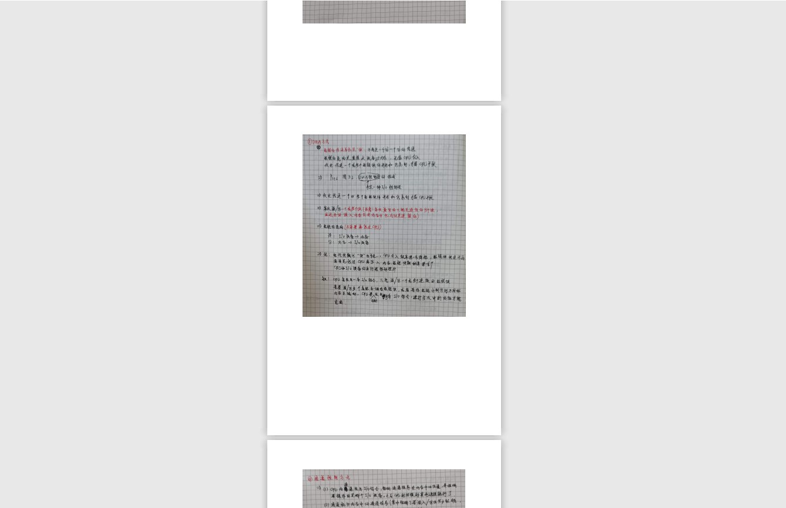
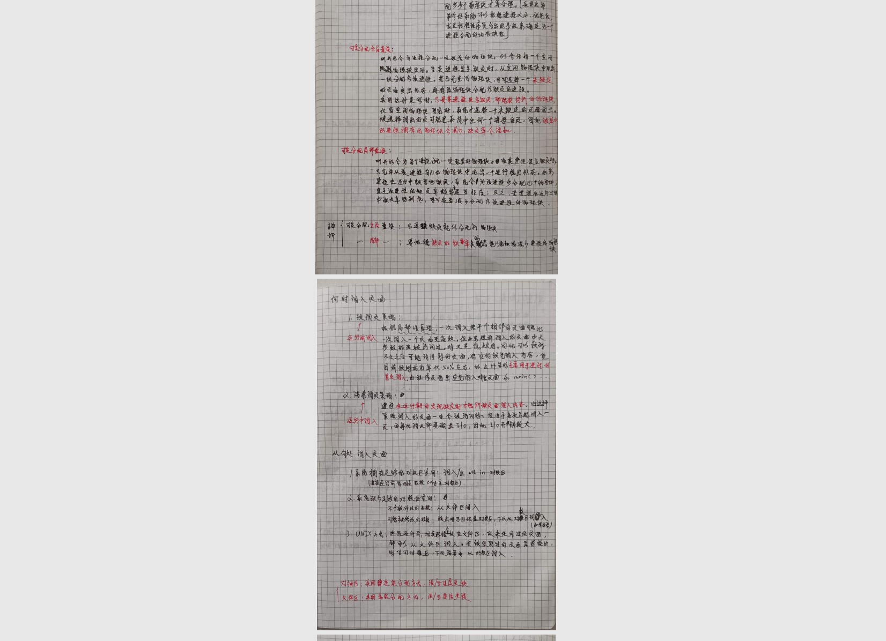

Python将批量图片转pdf
最近在整理以前的书籍和资料，发现了一堆自己写的笔记：
摊开之后的画面是这样的：
丢了吧，太可惜，留着呢，又用不到，而且还占地方。思来想去，我决定将它们扫描做成电子档，永久储存在云端。
说干就干，先拿<操作系统笔记>开刀。我用手机摄像头充当扫描仪，开始了漫长的扫描，这真是个体力活。
许久，终于扫描完了，共134张图片。二话不说，在手机相册中选中扫描的图片，传送到手机wps，开始合成pdf…
然后就好了………………………………………………………吗？
事实是：wps最高只支持一次将50张图片合成pdf，而且还是在开会员的前提下才能操作。emm， 看来要另寻他法了。
一个新的想法是，把图片全部弄进word里，导出pdf就好了
这确实可行，但是每两张图片之间的间隔实在是太大了，有点丑

而且作为一个Python爱好者，一遇到问题，就习惯性的想着能不能用Python来解决
因为如果下次，你有1000份文档的图片需要转pdf，使用word的话，你需要手动创建1000个word文档，然后做1000次导入图片的操作，这可真让人手酸。
拥抱Python吧！
经过一番搜索，我发现了img2pdf这个宝藏Python第三方库！
开工！
使用img2pdf将批量图片合成pdf
本次用到两个Python库，一个是os库，用于图片文件的读取，另一个当然就是img2pdf了
首先导入它们：
1 | import os |
然后获取全部图片的名称：
1 | path='note' |
输出的是一个包含全部图片名称的列表：
1 | ['IMG_20210129_113302.jpg', |
接下来到了核心的部分：将每张图片与其路径拼接起来，传入img2pdf写好的接口中
1 | with open('note.pdf', 'wb') as f: |
完整代码如下：
1 | import os |
此时，打开生成好的note.pdf，看一下效果：

看着顺眼了许多
我们可以将其封装成一个函数，然后就可以调用该函数做批量化的pdf生成啦！
1 | def generate_pdf(path): |
代码量不多，但功能很实用，这就是Python的魅力吧~
对了，上面生成的note.pdf（操作系统手写笔记）已上传，后台回复 ‘操作系统’ 即可获取链接
使用img2pdf，本号后续会将更多干货整理出来~
不说了，人生苦短，我用Python
最后，求在看，求再看，求再看，重要的事情说三遍~